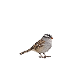
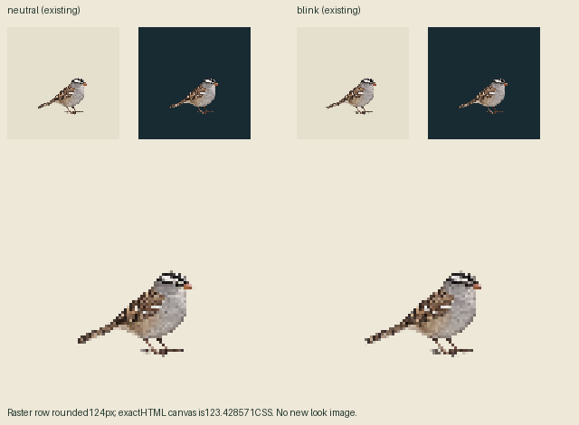

Two existing native drawings:awake and blink. Compatible look drawings found:0. No new image call. Exact current geometry:96canvas/world123.428571CSS,density7/9,pivot57,75;foot probes55,73 and58,73. Both phases are shown at1CSS/world. These are owned source images, not app/browser captures.
Awake unchanged
Existing blink, not a turn

Adult black/white crown stripes, gray face/breast,brown streaked wings and orange-pink short bill define the same reference individual. A new look must alter actual skull/bill orientation while preserving body/feet registration. Existing blink footredraw caution does not require new neutral.
